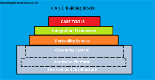

CASE-vahendid aitavad automatiseerida tegevusi susteemiarenduse elutsukli erinevates faasides. Naiteks prototuupimise vajaduse korral on olemas spetsiaalsed tarkvaralised vahendid, millega mugavalt ja kiirelt luua rakenduse ekraanipiltide graafilisi mudeleid. CASE-vahendeid voib nende konkreetse otstarbe jargi klassifitseerida mitmel viisil. Susteemiarenduse elutsuklit toetavad CASE-vahendid jaotatakse naiteks kahte kategooriasse: Ulemise taseme" CASE-vahendid (upper CASE tools) toetavad analuusi ja projekteerimist. Peamiselt on nad kasutusel kasutajanouete analuusimisel ja dokumenteerimisel. Nad on ennekoike moeldud visualiseerimiseks, erinevate skeemide koostamiseks ja ka dokumentatsiooni genereerimiseks. nad toetavad traditsiooniliste diagrammikeelte kasutamist (olem-seos diagrammid, andmemudelid, UML-skeemid, jne). alumise taseme" CASE vahendid (lower CASE tools) keskenduvad teostusele, kus mudelitest saab tegelik tarkvaratoode. Nad toetavad andmebaasi struktuuri genereerimist, koodi genereerimist, testide labiviimist, koodi versioonihaldust, konfiguratsioonihaldust, poordprojekteerimist jms. CASE vahendid voivad olla mone kitsa tegevuse toetuseks, kuid uuem suund on vahendid integreerida, et susteemiarenduse erinevatel etappidel loodud dokumentatsioon, mudelid, kood, testid jne oleksid paremini omavahel seostatavad. Seetottu on uhte tarkvarasse uhendatud ka alumise ja ulemise taseme CASE vahendid. Erinevad CASE-vahendid toetavad tarkvara arendusprotsessi eri ulatuses - monest uksikust arendussammust kuni integreeritud lahendusteni, st nouete kogumisest kui tarkvara haldamiseni. CASE-vahendite eriliigi moodustavad programmid, mis voimaldavad labida tarkvara arendusprotsessi vastupidises suunas", st teha poordprojekteerimist (reverse engineering), nt genereerida koodist susteemi ulesehitust kirjeldavat arhitektuuriskeemi voi genereerida kompileeritud koodist lahtekoodi. Selliseid vahendeid kasutatakse tihti tarkvara puuduoleva, ebataieliku voi vananenud dokumentatsiooni korral.
